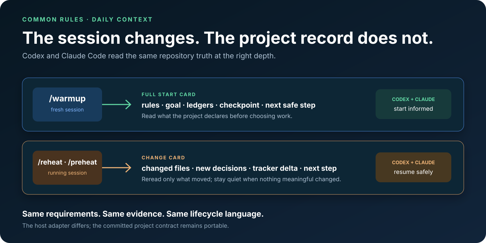

Codex + Claude Code
Keep project context when the chat changes.
Both hosts read the same calibrated project record. The session changes; the requirements, decisions, tracker, and evidence do not.

Session controls
Warmup loads truth. Reheat loads the delta.

Fresh session
Ask Common Rules to warm up. It loads the manifest, active feature, accepted requirements, repository revisions, and next gate.
Running session
Ask it to reheat or preheat. It shows only meaningful changes since the last checkpoint.
Automatic routing
You describe the outcome. A skill owns the gate.

The agent shares context. You keep acceptance authority.
Common Rules can detect, propose, verify, and record. A human still accepts proposals, resolves ambiguous ownership, trusts hooks, approves external writes, and releases.